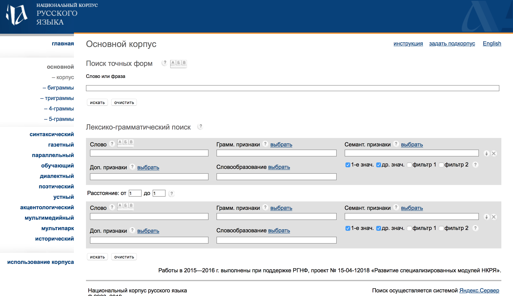

ФИО: Вартанова Елизавета Сергеевна
Место учебы: НИУ ВШЭ, факультет гуманитарных наук, ОП филология
Научные интересы: поэзия XIX века
На филфаке оказалась случайно, всю жизнь училась в физико-химических или физико-математических классах. Бывает и такое))
Всевозможные интернет-ресурсы, онлайн словари и библиотеки заметно облегчают жизнь филологам. Гораздо проще нажать несколько кнопок на клавиатуре и найти нужные источники и всевозможную полезную инфорамцию, чем искать в библиотеке необходимые источники

Безусловно, Национальный Корпус Русского Языка - ценный ресурс, часто выручающий филологов и не только. Ученые, исследователи и студенты не редко обращаются к сайту в поисках нужной им информации. Однако у НКРЯ есть свои недостатки. Обращаясь к своему опыту могу сказать, что сложно понять, где именно и как искать. После недолгих "копаний" в сайте становится уже все предельно понятно.